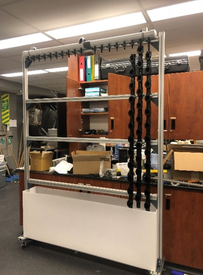
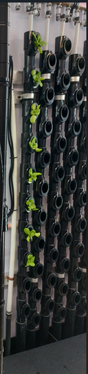
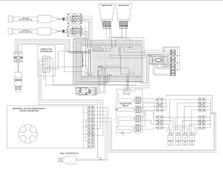

A working system held together by loose wires
The farm's original control system was built on an Arduino and a breadboard — functional, but fragile. Wiring failures were a real risk in daily operation, and the exposed prototype made the system hard to monitor, troubleshoot, or scale. I redesigned the system for a vertical air-lift farm used for high-density plant cultivation, circulating nutrient water through vertical channels while monitoring the operating conditions needed for reliable operation.


ESP32 platform, purpose-built enclosure, PCB hardware
I moved the whole platform onto an ESP32-based embedded system, integrating sensor inputs for water CO₂, water temperature, and air pressure to monitor environmental and operating conditions in real time. Control logic actuates pumps, valves, and mass flow controllers based on those sensor readings and the current system state — automating fluid circulation without an operator watching it constantly.
Just as importantly, I designed the hardware side properly: system block diagrams, captured schematics, and PCB layouts in KiCad, replacing the fragile jumper-wire assembly with a compact, serviceable board. The board went through two revisions as I refined the layout.



What changed
- Improved system reliability and reduced wiring failure points compared to the original breadboard prototype.
- Enhanced monitoring and troubleshooting capability through integrated sensor feedback.
- Increased maintainability with an organized enclosure layout and a proper PCB design.
- Enabled continuous, more hands-off operation with room for future scalability.